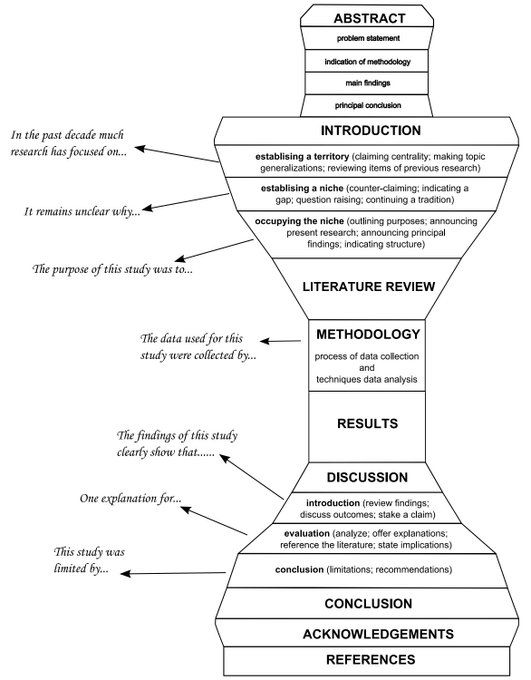

Acá presento una propuesta de estructura y contenidos de escritura académica, con foco en estudios empíricos en ciencias sociales. La propuesta de estructura no es un manual, solo una sugerencia basada en mi experiencia personal y en recomendaciones de otros investigadores.
La mejor estructura siempre es aquella que permite contar mejor lo que uno quiere contar, y en el caso de artículos empíricos la propuesta de abajo se ajusta bastante a lo que se solicita y espera en revistas académicas, y creo que ayuda principalmente a la escritura de trabajos donde a veces no es muy claro qué es lo que se espera. En este caso recomiendo ceñirse en primer lugar a esta propuesta y luego flexibilizarla en caso de ser necesario.
Secciones del trabajo
Típicamente, las secciones de un trabajo son:
- Resumen/abstract
- Introducción
- Antecedentes conceptuales y empíricos
- Metodología:
- 3.1 Datos
- 3.2 Variables
- 3.3 Métodos
- Resultados
- 4.1 Descriptivos (bivariados)
- 4.2 Modelos
- Discusión: vuelta a las hipótesis de investigación en relación a los resultados obtenidos
- Conclusiones:
- resumen de principales hallazgos
- limitaciones
- agenda futura
Abstract (250-300 palabras):
- Tiene cinco partes:
- problema/pregunta
- argumento central/hipótesis
- métodos (mencionar datos y N)
- principales resultados
- conclusión principal
1. Introducción:
Presenta problema, pregunta, hipótesis / argumento central.
Primer párrafo: tema, objeto de estudio y factores asociados
- Es crucial, el más importante de la introducción. En base a este párrafo el lector toma la decisión si vale la pena seguir leyendo o no, por eso debe estar dirigido a capturar a la audiencia a la que va dirigido.
- En general comienza describiendo el tema general y su relevancia social (Ej: La desigualdad económica ha ido en aumento los últimos años, acrecentando las brechas de oportunidades entre los más ricos y los más pobres.)
- Es importante recordar que un problema social es distinto de un problema de investigación. No porque existan “altas tasas de suicidio” significa automáticamente que se requiera investigación. El problema a fundamentar en este caso se relacionaría con cómo han sido investigadas las tasas de suicidio, y cómo esta investigación entonces responde a ese problema.
- Una vez enunciado este tema general, se pasa a la definición del objeto de estudio (Ej: la desigualdad económica se puede definir como …. [citas]).
- Luego se mencionan los principales elementos/conceptos asociados hasta ahora para explicar el objeto de estudio (Ej: “En la literatura especializada, los principales factores asociados a la desigualdad son la escasez de políticas redistributivas y la corrupción de los gobiernos [citas] ).
- Cuando se menciona la literatura especializada se recomienda mencionar la perspectiva disciplinar claramente (ej:“desde las investigaciones sociológicas …”)
Segundo párrafo: argumento y pregunta
- La revisión de los principales factores asociados al objeto de estudio (lo que se sabe) en el párrafo anterior, sirve como base para montar el siguiente escalón: el argumento central
- En general, antes de presentar el argumento central o principal se identifica una brecha de conocimiento donde podría calzar el argumento, que comienza con “hasta ahora”, y luego se define el principal concepto que permite explicar el objeto de estudio. (Ej: “Hasta ahora, las investigaciones sobre desigualdad han prestado escasa atención a las preferencias redistributivas, entendidas como … [citas]”). Aquí se recomienda revisar la forma argumentativa de “ellos dicen/yo digo” (Birkenstein & Graf).
- Y con eso se puede entonces describir lo que se va a hacer en esta investigación, su aporte a la agenda de investigación identificada: (Ej: “El presente estudio busca establecer en qué medida la desigualdad económica se asocia a las preferencias redistributivas que se manifiestan en una sociedad”), argumentando que en la medida que aumenten las presiones redistributivas en la población, la desigualdad económica tiende a disminuir)
- Y se puede finalizar con la pregunta (“Por lo tanto, nuestra pregunta de investigación se puede plantear de la siguiente manera: ¿En qué medidad la desigualdad económica disminuye en la medida que aumentan las presiones por la redistribución?”)
En los párrafos siguientes: argumentos adicionales o secundarios que van a dar pie a las distintas hipótesis. (ej: “además de las preferencias redistributivas, un segundo aspecto relevante a considerar es … [citas])
Al final de la introducción tienen que quedar claramente delimitados los conceptos en estudio, su relación y su relevancia.
Tip: pensar la introducción como un guión: http://blogs.lse.ac.uk/impactofsocialsciences/2018/05/21/writing-a-page-turner-how-to-tell-a-story-in-your-scientific-paper/
2. Antecedentes conceptuales y empíricos
Objetivo de esta sección: fundamentar las hipótesis en base a literatura especializada. Si no se relaciona con lo que aparece en las hipótesis, entonces no debe estar acá.
En esta parte no se incluye ni relevancia ni contexto histórico, eso ya fue parte de la introducción. Desde aquí en adelante comienza la revisión de la investigación sistemática en el tema de estudio. Importante seguir el modelo del reloj de arena, y no volver a temas generales una vez que ya se va especificando el argumento central.
Cada antecedente debe estar fundamentado en base a referencias, no dejar ideas sueltas que sean relevantes como un antecedente sin citas (Ej: El nivel educacional es uno de los principales factores que afecta la participación política). Si una idea así queda sin citas, entonces es una opinión del autor/a, y esta sección no es de opiniones, es de antecedentes.
En general se divide en dos sub-secciones: la primera relacionada con el objeto central de estudio, y las siguientes con los factores asociados que dan lugar a los argumentos centrales y a las hipótesis. No es necesario entonces mantener el título “antecedentes conceptuales y empíricos”, podría ser por ejemplo que el título sea el objeto central de estudio (“Desigualdad económica”), el siguiente el concepto utilizado en el argumento central (“Preferencias distributivas”) y otro para los argumentos secundarios (“Factores asociados a la desigualdad económica”).
En cada sub-sección se comienza con precisiones conceptuales, y luego se presenta resumen de evidencia empírica
Una vez presentados los argumentos, se pueden señalar las hipótesis específicas posterior a cada argumento.
Luego de esta sección al lector le debe ser posible imaginar qué viene en términos de diseño de investigación.
De aquí hacia abajo no deberían aparecer conceptos nuevos (o sea, conejos sacados del sombrero). Todos los conceptos que aparecen en las hipótesis de investigación deberían estar definidos en esta sección, así como también desarrollado el argumento central que da pie a cada hipótesis.
Sobre objetivos e hipótesis
Existen distintas opciones, como por ejemplo hacer una sección aparte, incluirlas a medida que se presentan los argumentos, o ambas. Yo recomiendo incluirlas en los antecedentes posterior a los argumentos, y si las hipótesis están bien formuladas se pueden ahorrar los objetivos específicos. De todas maneras las hipótesis deberían ser numeradas, y también puede ayudar un diagrama que permita visualizar más fácilmente las hipótesis (ej: ver en Franetovic & Castillo, 2022).
Importante: objetivos e hipótesis deben ser simples, breves y sustantivos (sin lenguaje técnico tipo, ej: “realizar una moderación mediada …”). Tampoco hablar de variables ni técnicas estadísticas, solo conceptos.
Las hipótesis son direccionales (ej: a medida que aumenta A, B …)
{kind=link}
3. Metodología (o Datos, variables y métodos)
3.1 Datos
- Fuente, año N, muestreo, detalles técnicos relevantes.
3.2 Variables
En esta sección se pasa del concepto a su operacionalización.
Se comienza con el objeto de estudio, que de aquí en adelante pasa a ser la variable dependiente. Se debe aclarar su medición con mucha precisión: fraseo literal de los items y escala de respuesta. Justificar si esta forma de medición es usual en la literatura o es una propuesta nueva.
Luego lo mismo para las variables independientes y variables de control.
Se recomienda una buena tabla de descriptivos univariados para finalizar esta sección, como la que otorga summarytools con dfSummary(), en R.
3.3 Métodos
- Descripción de lo que se va a mostrar en la sección siguiente de análisis: secciones, caracterísiticas de los métodos empleados, sentido del orden de presentación, software/librerías utilizadas
4. Análisis
Se sugiere una primera sección de descriptivos bivariados (tablas, gráficos, correlaciones) que introduzcan al lector a una primera aproximación del contraste de hipótesis
La segunda sección usualmente es la presentación de modelos de estimación, en general tablas de regresión. En los modelos avanzar respondiendo aspectos parciales referidos a la pregunta de investigación (construyendo la “historia” del paper), y guiado por las hipótesis.
5. Discusión
- Luego de la presentación de los resultados, acá se comienza a volver a los argumentos del trabajo y se relaciona cada hipótesis con los resultados. Se sugiere ir por orden, y un párrafo para cada hipótesis.
6. Conclusiones
- Resumir principales resultados (1 párrafo)
- Volver desde los resultados hacia el planteamiento inicial de la pregunta (conversar con la introducción)
- Aportes específicos y generales en el campo de estudios / disciplinar. lo importante es destacar el lugar de esta investigación en una agenda más general y cómo aporta.
- Limitaciones
- Ideas para futuras investigaciones.
- Eventuales propuestas de política pública que puedan asociarse a los resultados.
Recomendaciones generales:
- La secuencia es en general de lo macro a lo micro, y de lo más general a lo más específico, para volver luego a lo más general en las conclusiones (tipo reloj de arena).

Máxima de escritura: una idea por párrafo. Si comienza una idea nueva, comenzar otro párrafo. Al revés, si el párrafo siguiente habla de lo mismo, sumarlo al párrafo anterior.
La idea del párrafo se resume en la primera oración del párrafo, lo que en inglés se llama “topic sentence”. El párrafo no se puede referir a nada que no esté contenido en la primera oración. Sugerencia para construcción de párrafos: Al principio de cada párrafo anotar entre paréntesis cuadrado qué es lo que se quiere decir con el párrafo.
Para favorecer la continuidad de la lectura, incluir en la topic sentence algún concepto del párrafo anterior.
Para la revisión de conceptos principales, partir por fuentes generales: Annual Reviews, Handbooks, etc.
También ayuda si se encuentra un paper (reciente) relacionado, buscar citas y también citaciones, para esto lo más útil en términos mainstream es WOS (web of science), y también las citas en researchgate en caso de estar ahí.
El proceso general de escritura implica ponerse constantemente en el lugar del lector. Identificar a quién se le está escribiendo, para quién sería interesante leer este trabajo? También se puede explicitar en la introducción: este trabajo es relevante para …
Relevancia: hablar de la relevancia en el marco de una agenda de investigación donde se posiciona esta investigación. Relevancia no es decir que “es interesante” o “nunca antes se ha hecho”. Al respecto, revisar: Sandberg, J., & Alvesson, M. (2011). Ways of constructing research questions: gap-spotting or problematization? Organization, 18(1), 23–44. https://doi.org/10.1177/1350508410372151. Y también el libro de los mismos autores “Constructing research questions”
Declarar domicilio disciplinar: ej,mencionar la palabra “sociología” en el primer/segundo párrafo, esto fuerza que la investigación se enmarque en la disciplina.
Usar algún software de gestión de referencias bibliográficas (Ej. Zotero)
Tablas con el mínimo de líneas, y solo horizontales. Y si una tabla se puede reemplazar por un gráfico, siempre es mejor un gráfico.
No usar “etc.”, si hay que decir algo, hay que decirlo completo
Mantener estructura anidada de numeración (3.1, 3.2)